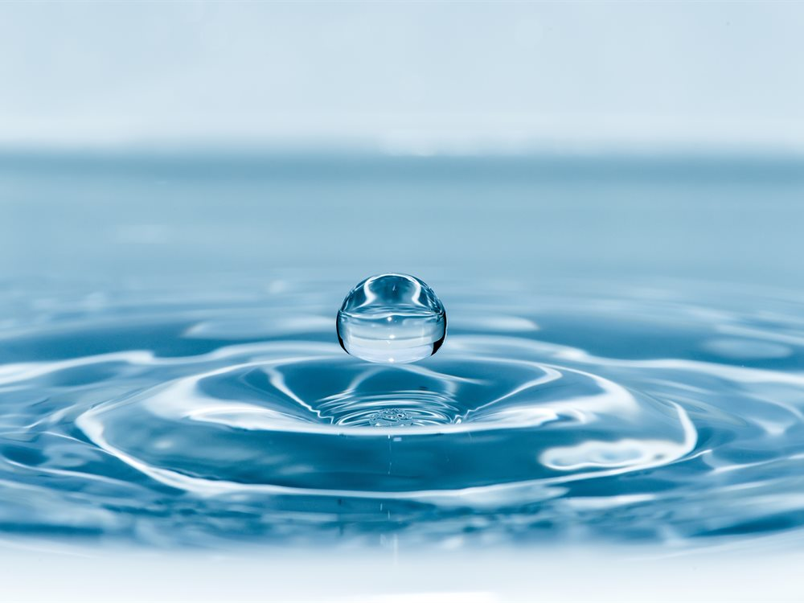

Laser Sensing AI Analysis Real-time Data01 ABOUT
수질·미생물 측정 기술 기업,
더웨이브톡
2016년 설립된 더웨이브톡은 KAIST의 광학 기술을 기반으로, 레이저와 AI를 활용한 수질·미생물 측정 솔루션을 개발합니다. 작고 빠르며 정확한 측정으로 물 관리 방식을 바꾸고 있습니다.
- 0설립 연도
- KR·US특허 등록
04 PRODUCTS
측정 기술을 담은 제품


05 APPLICATIONS
물이 쓰이는 모든 현장에
상수도 · 정수
정수장과 배관망의 수질을 상시 확인합니다.
스마트 가전
정수기·세탁기 등에 들어가는 소형 센서.
식품 · 음료
생산 공정의 미생물 오염을 신속 검사.
화장품 · 제약
무균 공정과 품질관리의 신뢰성 확보.
의료 · 진단
감염 진단과 항생제 감수성 검사.
가정 수질
일상에서 확인하는 우리 집 물의 안전.
06 PERFORMANCE
기술로 증명하고, 성과로 신뢰받습니다
0×기존 방식 대비 민감도
0시간미생물 검출 시간
0초수질 측정 시간
1/0기존 장비 대비 크기
07 NEWS
더웨이브톡 소식
물 관리의 다음 단계, 더웨이브톡과 시작하세요
수질·미생물 측정이 필요한 현장이라면 맞춤형 솔루션을 제안해 드립니다.